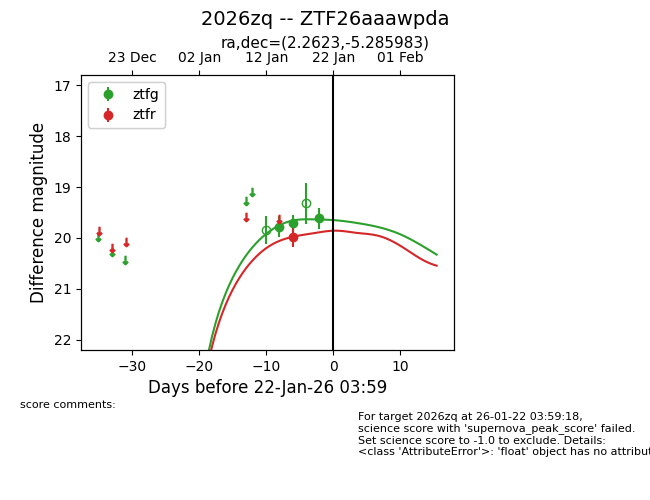
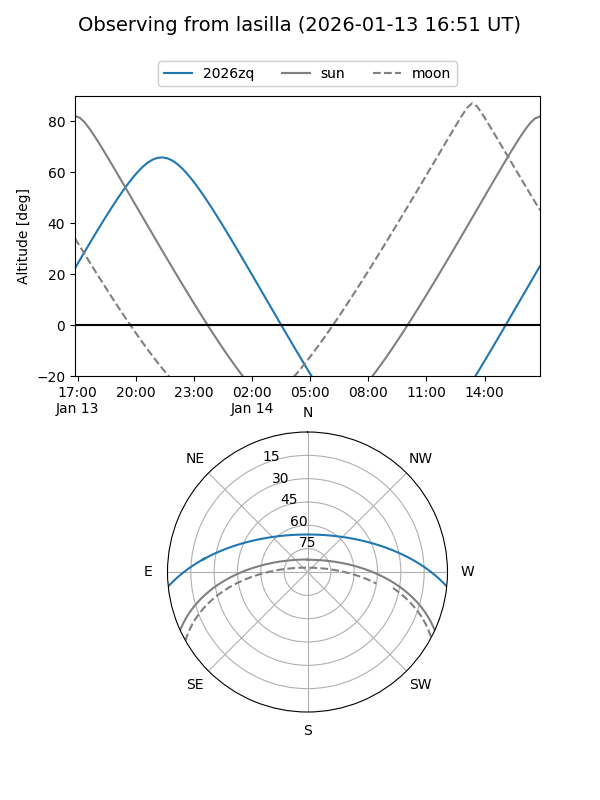
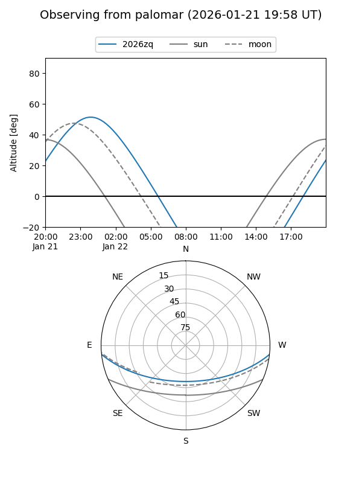
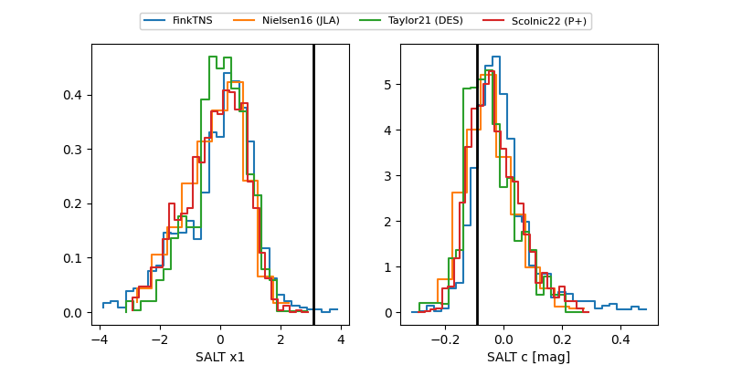

2026zq
Target 2026zq at 2026-01-20 02:47
Aliases and brokers:
FINK: link
Lasair: link
ALeRCE: link
TNS: link
YSE: link
alt names
ZTF26aaawpda (ztf,fink_ztf)
2026zq (tns,yse)
Coordinates:
equatorial (ra, dec) = 2.2623,-5.28598
equatorial (HMS+DMS) = 00:09:02.96,-05:17:09.54
galactic (l, b) = (96.2455,-65.93690)
Flags:
Photometry:
last ztfg=19.61, ztfr=19.98
3 ztfg, 1 ztfr detections
Lightcurve

Visibility


Additional plots
